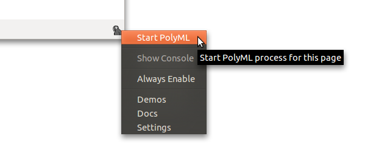
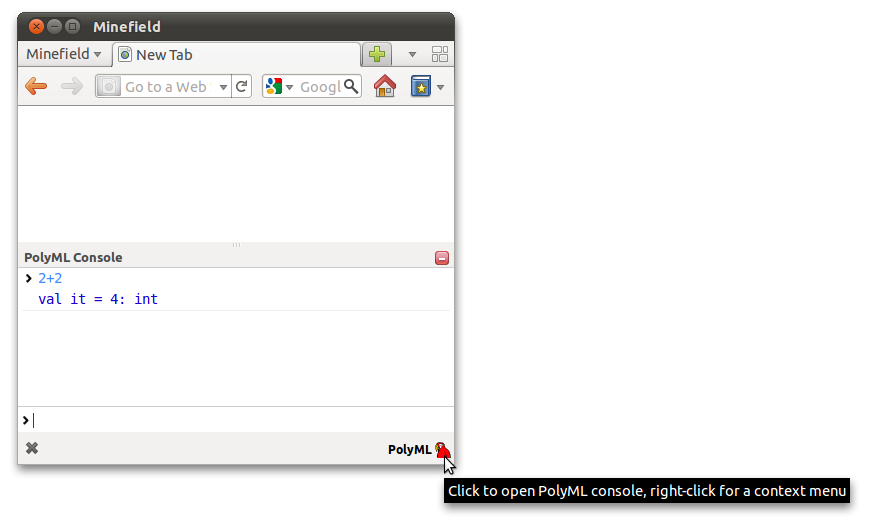

Warning :)
PolyChrome is still in an early stage of development. Hopefully, one day it will be polished at least a bit more. For now, as you'll see in the documentation and the code, some things are not as nice or as clear as they could be, but you're welcome to contribute with comments, ideas or code.
Also, this documentation is not yet exhaustive, and we about quite a few issues already :)
Updating the extension
As of now, the extension has not been reviewed by Mozilla, therefore no updates of the extension will be automatically pushed to your browser. You'll have to manually check for new versions of the extension at https://addons.mozilla.org/en-US/firefox/addon/271847/.
Installation
To use the PolyChrome extension you'll need to install PolyML and the PolyChrome extension itself.
Test It
After you've done that, you can check whether it's working by opening up Firefox, right clicking the extension icon at the bottom right corner of the browser and clicking Start PolyML.
The label should change to Initializing.... This means that the neccessary heaps are being built for the first time. After the label changes to PolyML as in the screenshot below try entering some Standard ML code into the console (if you can't see the console click on the PolyChrome icon).

Troubleshooting
If some of the above steps did not work, please refer to the Troubleshooting section
User Interface
You've seen most of what you need to know already and you'll see the rest as you go, but a few quick additional snippets of information in case you find this confusing.
- this icon means that PolyML is not active for this document and no Standard ML code found on this page will be executed.
 - this icon means that PolyML is active for this document.
- this icon means that PolyML is active for this document.
Note that by default, PolyML will never be active for documents containing no SML code. For documents containing SML code, the behavior depends on the Always Enable setting.
Also note that once you've enabled PolyML for a certain tab containing SML code, it will remain enabled until you close the tab or stop PolyML via the context menu.
Hello World
This example will demonstrate how to write SML applications using the PolyChrome.
1.
First, create an empty document called hello.html. Paste the following code into the document, and open the document with Firefox.
<!DOCTYPE html> <html> <head> <title>Hello SML World</title> <script type="application/x-polyml"> val hello_div = valOf (DOM.getElementById DOM.document "hello") val _ = DOM.setInnerHTML hello_div "Hello Graphical SML World" val paper = valOf (DOM.getElementById DOM.document "paper") val context = Canvas.getContext paper "2d" val _ = Canvas.fillStyle context "green" val _ = Canvas.fillRect context 10 10 30 50 </script> </head> <body> <h1 id="hello"></h1> <canvas id="paper"></canvas> </body> </html>
2.
That's it!
What happened here?
At first, Firefox rendered the HTML document, which is simply a blank page, because it contains an empty h1 element and an empty canvas element. Then, PolyChrome extension found the PolyML code on this page and executed it. The code used DOM library to select the h1 element and add some text into it and then used Canvas library to draw a rectangle in the canvas element.
To fully understand the above example you should be familiar with HTML and JavaScript. Even though, no JavaScript was written in this example, the usage of DOM and Canvas libraries very closely corresponds to the way you would write JavaScript. For instance, lets look at equivalent SML and JavaScript code side by side:
| Standard ML |
DOM.getElementById DOM.document "hello" |
| JavaScript |
document.getElementById("hello") |
| Remarks |
| DOM.getElementById returns an option type, which is NONE if the element does not exist in the document. JavaScript returns null in such case. |
| Standard ML |
DOM.setInnerHTML hello_div "Hello Graphical SML World" |
| JavaScript |
hello_div.innerHTML = "Hello Graphical SML World" |
| Remarks |
| Notice that in case of JavaScript, innerHTML is not a function but rather an attribute. Such attributes can be accessed using the setters and getters provided in the SML DOM library. |
| Standard ML |
Canvas.fillRect context 10 10 30 50 |
| JavaScript |
context.fillRect(10,10,30,50) |
| Remarks |
| In case of SML we pass the context object to a function, whereas in JS we call the method of the object itself. |
Demos
A good way of trying out the extension is checking out the demos that can be opened via the context menu of the extension or by opening chrome://polychrome/content/demos/index.html (note that this link will only work in Firefox with PolyChrome installed).
These demos are not intended to be polished applications. They were created for a proof-of-concept reasons. Some of them, in fact, demonstrate the limitations of the extension.
Troubleshooting
Here are a few things you could take a look at to help in identifying some of the problems.
PolyML Not found
If PolyML is not installed or found on the machine, you will see this.

Click on the icon to go to settings of the extension and configure the path to your PolyML installation.
JavaScript Error Console
PolyChrome extension uses Firefox'es JavaScript Error Console, that can be opened by Tools > Error Console or by Ctrl-Shift-J. Note, that errors from all Firefox extensions or even websites are printed here, so not all of it may be reported by PolyChrome. Only JavaScript components of the extension will report errors here.
stdout
Currently, not all of the PolyML output is printed to the PolyML console in Firefox. Some of it goes to the stdout, that can be seen, for example, by opening Firefox from a terminal (e.g. on linux that would mean executing command "firefox" in the terminal)
Rebuilding Heaps
You'll find the "Rebuild Heaps" button in the settings page, in case that is your problem. For example, this could be needed if you updated the version of PolyML on your machine.
Architecture
To understand the limitations and potential applications of the PolyChrome extension, it is important to have some insight on how it works
Firefox
Firefox browser is as a collection of HTML rendering engine, DOM, JavaScript engine, networking components and many other components. When you enter a URL into the address bar and press enter, Firefox loads an HTML document from the server (or local filesystem), parses it into a Document Object Model (DOM), renders it on the screen and executes the JavaScript code embedded in the HTML document. JavaScript can modify how the document is rendered on screen and react to various user interaction events like mouse clicks and keyboard presses. DOM, which is the in memory representation of HTML, is reflected into JavaScript as a JavaScript object. Calling methods and modifying attributes of this DOM-JavaScript wrapper object affects the DOM and the way it is rendered to the user.
PolyChrome
After the document is loaded, parsed and rendered, PolyChrome looks at the DOM to see if the document contains any script tags with PolyML code. If that's the case a PolyML process is started specifically for this document. A socket communication is established between the JavaScript components and PolyML components. The code that was found on the page is sent through the socket to PolyML for evaluation.
JS FFI
Because we have this connection between JavaScript and PolyML and because JavaScript has access to DOM, we can now ask JavaScript to modify the DOM from within SML.
Read more about the FFI in section Using JavaScript FFI and read the next section to see what are the implications of using this socket-based-foreign-function-interface.
PolyChrome Components
Below is a rough scheme of the PolyChrome components and their relationships.

Additional References
MSc thesis on PolyChrome: http://www.inf.ed.ac.uk/publications/thesis/online/IM100814.pdf
Memory Sharing
DOM elements (e.g., input fields, buttons, paragraphs, images) appear in JavaScript as JavaScript objects. To work with these objects need to be able to store them and access their methods and attributes from within SML.
For example, every time, you call a DOM function that returns an HTML element, e.g.:
val getElementById : Document -> string -> HTMLElement option
you are actually only getting a unique string identifier of this element. That is, JavaScript keeps track of all these objects that SML had interest in, by storing (string identifier, reference to the object) tuples. It only sends the string identifier of an object to SML.
If you lose the string identifier in SML, there is no way to get access to a the corresponding DOM or JavaScript object, however the reference remains stored in JavaScript, which could prevent JavaScript garbage collection and in this way leak memory.
Memory Management
To prevent the memory leaking, you will have to clean up any JavaScript references, when you don't need them in SML anymore. To do that you should use the jsffi.Memory structure
signature JSFFI = sig ... (* these are used for keeping the temporary memory, used for storing javascript objects, tidy *) structure Memory : sig val switchNs : string -> unit val switchDefaultNs : unit -> unit val addFunctionReference : string -> fptr val addFunctionReferenceOW : string -> fptr val removeReference : string -> unit val deleteNs : string -> unit val clearNs : string -> unit val clearDefaultNs : unit -> unit end ... end
For example:
val a = valOf (DOM.getElementById DOM.document "test") (* if the value is not going to be ever used anymore *) val _ = jsffi.removeReference a
Namespacing
It might be cumbersome to keep track of all these references individually. For convenience, you can use the "namespacing" functionality.
(* we'll be using this value throughout the lifetime of the application *) val permanent = valOf (DOM.getElementById DOM.document "permanent") fun temporary () = let val _ = jsffi.switchNs "temp" val temp1 = valOf (DOM.getElementById DOM.document "temp1") val temp2 = valOf (DOM.parent temp1) val temp3 = valOf (DOM.lastChild temp2) (* you can still access the "permanent" element here *) val _ = DOM.setValue temp3 (DOM.getValue permanent) val _ = jsffi.deleteNs "temp" in () end
Persistance
Currently, you can add a "persist" class to the script tags of your PolyChrome application, to tell the extension not to remove the sandbox directory of the application
For example, you can include your application in the document like this:
<script type="application/x-polyml" src="link/to/file1.sml" class="persist"></script>
Then, your included application can create some files on the disk. The next time you open this application in the browser, those files can still be accessed by the application.
If you include multiple scripts, it's enough to add "persist" class to one of them as the persistant storage is provided to the application based on the document url.
Your PolyChrome application starts in the root of this persistant storage directory.
In the Settings page you can clear the persistant data of all applications. To delete data per application basis you'll have to do that manually by browsing to your-ff-profile/extensions/polychrome@ed.ac.uk/storage/persistant/.
It would be nice in the future to explore the HTML5 local storage capabilities, perhaps combine it with the file storage.
Using JavaScript FFI
PolyChrome can execute any Standard ML code. However, the HTML/DOM interaction is limited by what is provided in the DOM and Canvas libraries. Currently these 2 libraries don't provide much functionality and they will have to be extended in order to do something useful.
It is easy to extend the libraries or implement wrappers for any other existing JavaScript libraries, by using the JavaScript Foreign Function Interface (jsffi structure). In the demos page you'll find examples of jQuery and Raphael JavaScript libraries being used from SML.
jsffi
There are currently 4 functions that you can use to interact with JavaScript
signature JSFFI = sig ... (* these are used to call JS functions when using exec_js_r, it is up to the implementation of the wrapper function to convert the returned string to an appropriate type *) (* args: an fptr to an object, a function name, an argument list *) (* e.g. exec_js_r "document|" "getElementById" [arg.string "something"] *) val exec_js_r : string -> string -> JSON.T list list -> string val exec_js : string -> string -> JSON.T list list -> unit val exec_js_get : string -> string -> JSON.T list list -> string val exec_js_set : string -> string -> JSON.T list list -> unit ... end
exec_js_r and exec_js are used to call JavaScript functions. The former expects something returned and the latter does not. They take 3 arguments. An object whose method will be called, a name of the method and a list of arguments.exec_js_get and exec_js_set are similar, but instead of calling methods they get and set attributes of the object.
To start with, you can use two fptr - "window|" and "document|". The foreign pointers are simply strings of this form "identifier|namespace". Window object in the browser is the root, global, ultimate object in the browser. Any JavaScript variable or function that is created in global scope becomes an attribute of the window object. Even the document object can be accessed using the window object fptr.
exec_js_get "window|" "document" []; val it = "0|": string
Now, the fptrs "0|" and "document|" point to the same JavaScript object. Both of them can now be used as the first arguments to the exec_js functions.
For example, to call the getElementById function, we do:
fun parse_element e = case e of "null" => NONE | x => SOME (HTMLElement x) fun getElementById (Document d) id = parse_element (exec_js_r d "getElementById" [arg.string id])
For example, to use the Raphael library, we can do this:
... <script type="text/javascript" src="raphael/js/raphael-1.5.2.js"></script> <script type="application/x-polyml"> datatype paper = Paper of fptr fun Raphael (x, y, w, h) = Paper (exec_js_r "window|" "Raphael" [arg.int x, arg.int y, arg.int w, arg.int h]) </script> ...
Accessing Deeper Attributes of JavaScript Objects
Javascript
Raphael.getColor()
is equivalent to JavaScript
window.Raphael.getColor()
which in SML can be achieved by
exec_js_r "window|" "Raphael.getColor" []
Callbacks
Sometimes you need JavaScript to be able to reference PolyML memory. One of such cases is DOM events. To handle DOM events, the JavaScript FFI is used to add event listeners, but there has to be a way for the JavaScript event handler to call PolyML functions. This is currently quite cumbersome as it involves maintaining data structures to store the PolyML functions for later use. In the future, it would be nice to have this integrated in the jsffi structure.
Below is an implementation of DOM.addEventListener
structure DOM : DOM =
struct
local open jsffi in
...
datatype EventListener = EventListener of string;
datatype Event = Event of fptr
datatype EventType = click | change | keypress | keyup | mouseover | mouseout | mousemove
datatype EventCallback = EventCallback of Event -> unit
(* we'll keep event callbacks here *)
val eventCallbackTab = ref (Tab.empty : (HTMLElement * EventType * EventCallback) Tab.T)
fun handle_event id event = let
val (_, _, EventCallback f) = (Tab.get (!eventCallbackTab) (Name.mk id))
handle UNDEF => (raise Error ())
val _ = f (Event event)
val _ = Memory.removeReference event (* clean up the memory *)
val _ = ready ()
in () end
...
fun addEventListener_ (HTMLElement e) et f add_function_reference = let
val callback = "val _ = DOM.handle_event {id} {arg} ;"
val id = add_function_reference callback
val entry = (HTMLElement e, et, f)
val _ = (eventCallbackTab := Tab.ins (Name.mk id, entry) (!eventCallbackTab))
val _ = exec_js e "addEventListener" [arg.string (string_of_eventtype et),
arg.reference id, arg.bool false]
in EventListener id end
fun addEventListener e et f = addEventListener_ e et f Memory.addFunctionReference
fun addEventListenerOW e et f = addEventListener_ e et f Memory.addFunctionReferenceOW
fun removeEventListener (EventListener id) = let
val (HTMLElement e, et, _) = (Tab.get (!eventCallbackTab) (Name.mk id))
handle UNDEF => (raise PolyChrome.DOMExn "Undefined listener");
val _ = (eventCallbackTab := (Tab.delete (Name.mk id) (!eventCallbackTab)))
val _ = exec_js e "removeEventListener" [arg.string (string_of_eventtype et),
arg.reference id, arg.bool false]
val _ = Memory.removeReference id
in () end
...
end
end
Comments
We store the HTML element, event type and event callback function to the eventCallbackTab table. We need this table to be able to call the function anytime the event fires. The event type and the HTML element has to be stored, because that information is needed when we want to remove the event listener.
add_function_reference is used to create a JavaScript function, that when called, sends a string to PolyML, in this case "val _ = DOM.handle_event {id} {arg} ;", for evaluation. This way we can create a JavaScript function that can call an SML function. The obscure {id} bit is replaced by JavaScript with the string identifier of that JavaScript function. It is the same identifier that is used for all JavaScript objects that are shared between JavaScript and PolyML as discussed in the Memory Sharing section. Each of the following {arg} substrings are replaced with the argument that the JavaScript function was called with. For example, in this case, all callbacks passed to the window.document.addEventListener function are called with an event object, which in this case is going to be passed to the SML function as an argument (again, only the string identifier will be passed to SML).
The difference between Memory.addFunctionReference and Memory.addFunctionReferenceOW is that the latter can be used in case of rapidly firing events. All of the callbacks that are called using the mechanism described above are queued up in JavaScript. If, for example, you listen to the mousemove event, moving the mouse will queue up a lot of these event callbacks. If Memory.addFunctionReferenceOW is used, where OW stands for OverWritable, then only the last function call in the queue will be called when PolyML is ready to handle more events. By the way, that is what jsffi.ready() is needed for. It tells JavaScript that PolyML is ready to handle more events and the next callback from the queue is dispatched to PolyML.
To fully understand what's going on in here you will have to look at the implementation of jsffi in both SML and JS. Those can be found in jsffi.sml and JSFFI.js files.
DOM signature
signature DOM = sig datatype Event = Event of jsffi.fptr datatype Window = Window of jsffi.fptr datatype EventListener = EventListener of string datatype HTMLElement = HTMLElement of jsffi.fptr datatype Timeout = Timeout of string datatype Interval = Interval of string datatype TimerCallback = TimerCallback of unit -> unit datatype EventType = change | click | keypress | keyup | mousemove | mouseout | mouseover datatype HTMLCollection = HTMLCollection of jsffi.fptr datatype EventCallback = EventCallback of Event -> unit datatype Document = Document of jsffi.fptr val document : Document val window : Window val fptr_of_HTMLElement : HTMLElement -> jsffi.fptr val string_of_eventtype : EventType -> string val parse_element : string -> HTMLElement option val parse_element_list : string -> HTMLElement list val getElementById : Document -> string -> HTMLElement option val getElementsByTagName : Document -> string -> HTMLCollection val parentNode : HTMLElement -> HTMLElement option val lastChild : HTMLElement -> HTMLElement option val removeChild : HTMLElement -> HTMLElement -> unit val previousSibling : HTMLElement -> HTMLElement option val getStyle : HTMLElement -> string -> string val replaceChild : HTMLElement -> HTMLElement -> HTMLElement -> unit val nextSibling : HTMLElement -> HTMLElement option val setStyle : HTMLElement -> string * string -> unit val firstChild : HTMLElement -> HTMLElement option val appendChild : HTMLElement -> HTMLElement -> unit val childNodes : HTMLElement -> HTMLElement list val createElement : Document -> string -> HTMLElement val createTextNode : Document -> string -> HTMLElement val getAttribute : HTMLElement -> string -> string val setAttribute : HTMLElement -> string * string -> unit val removeAttribute : HTMLElement -> string -> unit val getInnerHTML : HTMLElement -> string val setInnerHTML : HTMLElement -> string -> unit val getValue : HTMLElement -> string val setValue : HTMLElement -> string -> unit val getHTMLCollectionItem : HTMLCollection -> int -> HTMLElement val addEventListener : HTMLElement -> EventType -> EventCallback -> EventListener val addEventListenerOW : HTMLElement -> EventType -> EventCallback -> EventListener val removeEventListener : EventListener -> unit val setInterval : Window -> TimerCallback -> int -> Timeout val clearInterval : Window -> Interval -> unit val setTimeout : Window -> TimerCallback -> int -> Timeout val clearTimeout : Window -> Timeout -> unit val handle_event : string -> jsffi.fptr -> unit val handle_interval : string -> unit val handle_timeout : string -> unit val getClientX : Event -> int val getClientY : Event -> int val alert : Window -> string -> unit end
Canvas Signature
signature CANVAS =
sig
datatype Context = Context of jsffi.fptr
val getContext : DOM.HTMLElement -> string -> Context
val stroke : Context -> unit
val fillRect : Context -> int -> int -> int -> int -> unit
val moveTo : Context -> int -> int -> unit
val fill : Context -> unit
val lineTo : Context -> int -> int -> unit
val getStrokeStyle : Context -> string
val beginPath : Context -> unit
val fillStyle : Context -> string -> unit
val getFillStyle : Context -> string
val canvasHeight : Context -> int
val arc : Context -> int -> int -> real -> real -> real -> bool -> unit
val getLineWidth : Context -> string
val canvasWidth : Context -> int
val setStrokeStyle : Context -> string -> unit
val setFillStyle : Context -> string -> unit
val setLineWidth : Context -> real -> unit
end
JSON Signature
signature JSON = sig exception notobj_exn of unit structure Tab : NAME_TAB structure Name : SSTR_NAMES datatype T = Bool of bool | Int of int | List of T list | Null | Object of T Tab.T | Real of real | String of string val empty : T val update : string * T -> T -> T val add : string * T -> T -> T val lookup : T -> string -> T option val get : T -> string -> T val delete : string -> T -> T val encode : T -> string end
JSFFI Signature
signature JSFFI =
sig
type fptr
exception Error of unit
structure Tab : NAME_TAB
structure Name : SSTR_NAMES
(* this is used in combination with the exec_js_r and exec_js*)
structure arg :
sig
val string : string -> JSON.T list
val reference : fptr -> JSON.T list
val real : real -> JSON.T list
val object : JSON.T -> JSON.T list
val null : unit -> JSON.T list
val list : JSON.T list -> JSON.T list
val int : int -> JSON.T list
val callback : string -> JSON.T list
val bool : bool -> JSON.T list
end
(* these are used to call JS functions
when using exec_js_r, it is up to the implementation of the wrapper
function to convert the returned string to an appropriate type *)
(* args: an fptr to an object, a function name, an argument list *)
(* e.g. exec_js_r "document|" "getElementById" [arg.string "something"] *)
val exec_js_r : string -> string -> JSON.T list list -> string
val exec_js : string -> string -> JSON.T list list -> unit
val exec_js_get : string -> string -> JSON.T list list -> string
val exec_js_set : string -> string -> JSON.T list list -> unit
(* this must be called after handling each event *)
val ready : unit -> unit
(* these are used for keeping the temporary memory, used for
storing javascript objects, tidy *)
structure Memory :
sig
val switchNs : string -> unit
val switchDefaultNs : unit -> unit
val addFunctionReference : string -> fptr
val addFunctionReferenceOW : string -> fptr
val removeReference : string -> unit
val deleteNs : string -> unit
val clearNs : string -> unit
val clearDefaultNs : unit -> unit
end
end
Development Guide
The source code and the bug tracker can be found at https://github.com/KidkArolis/PolyChrome.
Setting Up the Development Environment
Firefox extension is a zip archive with all of the extension files (with an extension .xpi), that is extracted to your Firefox profile once you install it. You could browse to your firefox profile and modify the code of the extension there, but there is a much better way of working on the code of the extension. Clone or fork the repository and create a "symlink" in your Firefox profile, pointing to the repo. Note, that this symlink is not a symlink in a usual sense, it is just a text file with a path to the extension. The simplest way of doing this is using the deploy script that you'll find in the root dir of the repo.
To use the deploy script you'll first need to create a deploy.cfg file based on the deploy.cfg.template
After that, simply executing
# ./deploy run
will place a text file in your Firefox profile with the path to the source code of the extension and will immediately run Firefox (with the error console opened up). After running the deploy script once, Firefox will always load the extension from your repository. However, you do need to restart the Firefox browser every time you modify the JavaScript components of the extension or overlays/styles, etc. If you can't see some changes that you expect to see after restarting Firefox, you might want to run the deploy script again, because it clears the extension registry/cache. To remove the extension, you can simply uninstall it via the Add-Wons manager in Firefox
Modifying SML components requires only the refresh of the HTML document. When extension is loaded using this "symlink", the extension knows it's running in development mode (function Utils.isDevelopmentMode) and therefore recompiles the SML components every time a document is opened.
Also, you should take a look at https://developer.mozilla.org/en/setting_up_extension_development_environment, especially the "Development preferences".
In general https://developer.mozilla.org/ is the place to look for all of the extension development related docs.
Packaging
Executing
# ./deploy package
will zip the neccessary files and create an .xpi file.
File Structure
/polychrome/chrome/content/core - contains the JavaScript components of the extension. Their relationships can be seen in the Architecture section
/polychrome/chrome/content/core/PolyChrome.js - is the entry script. PolyChrome.init function, called in the ff-overlay.xul, starts the magic.
/polychrome/chrome/content/ff-overlay.js - describes the GUI of the extension.
/polychrome/chrome/content/docs - contains this documentation that you're reading right now. A copy of this directory is placed in the "gh-pages" branch of the repo for online access via GitHub pages.
/polychrome/chrome/content/demos - contains all of the demos.
/polychrome/poly - contains the SML components of the extension.
/polychrome/poly/main.sml - is the entry script of the PolyML side of things. PolyChrome.main is the initialization function called in the polyml.sh bash script (that is executed in JavaScript).
/polychrome/poly/bin - contains some bash scripts for finding PolyML binary on the clients machine, running the main.sml script, and killing the PolyML process. This is the only bit of the whole extension that prevents it to be truly cross-platform. Hopefully, with some modifications in the next release of PolyML, these scripts won't be neccessary anymore.
/polychrome/poly/isaplib/ - contains the isaplib library that is used by the extension. Isaplib is part of the IsaPlanner
/polychrome/sandboxes/ - is used to store all temporary files downloaded from the server (when they're included using script tags).
Read https://developer.mozilla.org/en/building_an_extension for description of the other, Firefox specific, files, such as install manifest.